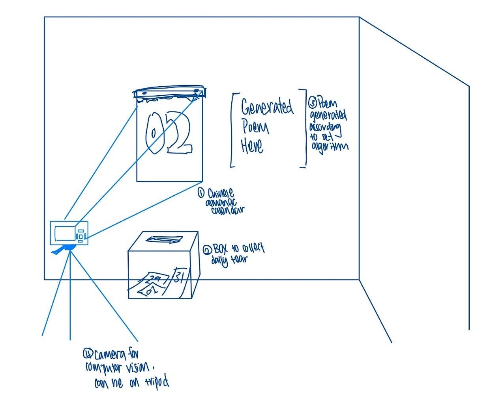
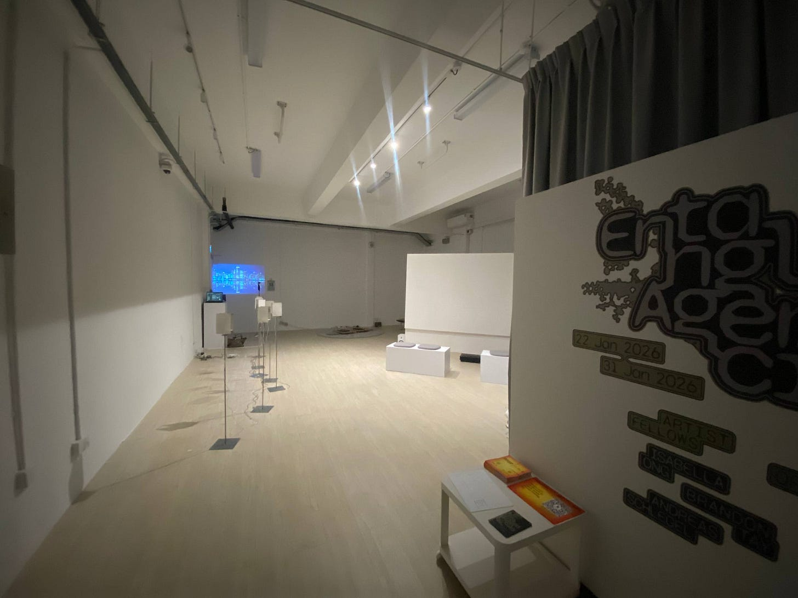

On Becoming… Artist!
My foray into Singapore Art Week (SAW) 2026
Who am I? Well, I am a final-year Economics student in NUS. I enjoy writing, reading, and cycling in my free time. For a fun fact, I am a licensed sailor of non-motorised ships.
Or if you’re an employer – my experience spans across private and public institutions, equipping me with the right balance of qualitative and quantitative skills.
Now, I suppose, I have an additional line: I’m an artist, I was exhibited at Entangled Agencies during Singapore Art Week 2026.
Machine Almanac features four components: a traditional Chinese almanac, a projector displaying a poem next to the almanac, a webcam pointed at the almanac and connected to a laptop running python tesseract OCR, and you – the viewer! With each tear of the almanac’s pages, the webcam re-reads the page, generating a new poem describing your fortunes for the day.
There were many conceptual threads at play here, and it’ll be difficult to fully articulate them. Here they are in point form:
- My experience and personal love for the Chinese Almanac. It’s been a staple in my very old-fashioned household, where my mother tears a page every day without fail. Besides the sentimentality, I genuinely enjoy its aesthetics.
- TikTok spirituality: something many in my generation fall prey to. The most effective videos being those that start with “No hashtags, no captions, this reading is for YOU”.
- RE: TikTok spirituality: my fascination with algorithmic fortunes. Digital tarot cards, digital roll-the-dice. Those palm reading machines in shopping malls.
- RE:RE: Tiktok spirituality: what exactly makes one “believe”? What makes a fortune “believable”? From a trusted source? If said in a certain way?
- Fortune cookies, temple fortunes – who writes these? Where does meaning originate?
If I were to condense these into a curatorial statement, it would be:
Machine Almanac stages timekeeping as a shared ritual between human and machine. Through the act of tearing a calendar page, the human marks a temporal passage, triggering an algorithmic response in the generation of a quatrain poem. Meaning emerges not from the machine’s wisdom, but from the viewer’s interpretive projection. You, the user, is trying to decipher the almanac along with the machine in a case where agency and sense-making has been distributed.
These were questions I’ve been considering for some time. It just so happened that I had the opportunity to attend some workshops hosted by Supernormal.space on methods of approach for creative technologies. The workshop included an Open Call for artwork proposals to which I (fortunately) chose to answer! This post will be a detailing of that process On Becoming an Artist!
Step 1: Concept

Begin by sketching out what your work would look like. A really rough idea is all that is needed. It is really the intention/idea behind your work that matters most. Try hard to write a good artist statement but know that the curator would workshop it with you
Step 2: Procure Materials
A mistake I made was not procuring materials and prototyping immediately. Please get what you need as soon as possible and not work on the algorithm blind like I did. TRUST.
Step 3: Setting up
There’ll be a day where you can come down to the exhibition space to set up your work. Do not fret — nobody is expecting you to have a “finished” product. This is the time to take a look at the space, the positioning of your piece, and discuss potential alterations to be made.
My initial idea was to have the webcam face the almanac directly. This changed to angling the webcam, inviting visitors to step closer to the almanac and facilitate tearing of pages.
Take note of whatever changes are to be made, go home and reflect on them
Step 4: Final stretch
A few days before the actual exhibition opening date is when things have to really start coming together. Just implement whatever changes there are to be made and be confident!
This is when you’ll have to start writing your Gallery Sitter Instructions. Here are some tips:
- Start off with a brief introduction of the piece and the interaction flow (if interactive)
- Do a Day-to-Day setup guide. Detail EVERYTHING. For example: “long press the button on the back of the projector to turn it on but do not move the projector.” When I say detail, I mean excessive detail
- Take photos of your set up as a “model template”. Write down the distances of things. For example: “projection should be 5cm to the left of the almanac”.”
- Do a walkthrough of the worst-case scenario
- Include your contact details for the gallery sitter to reach out to
And that’s it! That is your artist journey!
Overall…
It was a meaningful experience where I got to meet a lot of interesting people and step somewhere far out of my comfort zone. Some learning points for me, a complete novice, would be to be firm about your artistic choices. In Art (capital A intentional), each placement and decision must’ve been considered. You are the artist here, and you have final say over how you’ll like your piece to be displayed and interacted with — even as an amateur.
If your piece is interactive, make it obvious through a written sign, sticky notes, whatever. The general public’s perception of a gallery is one where everything is off-limits. No amount of “contextual cues” can override socialisation. I have lots to say on this, especially after visiting The Strange Archive at Singapore Arts Museum (SAM). More in pt 2!
Finally, just enjoy yourself and be confident! Throughout the exhibition runtime at Aliwal, it felt as if a piece of my consciousness resided in that gallery. It was a rather stressful week as I constantly thought about how people would perceive my art (and by extension, me). I grappled with questions surrounding whether what I did was art, and just what sort of art I wanted to create. Or broadly, what art is at all! Once again, more musings in pt 2.
